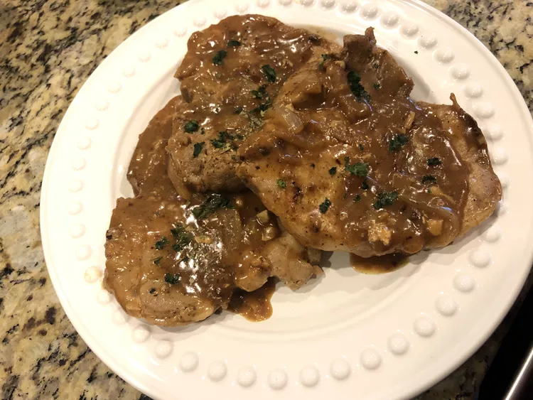

Pork Chop

Chef John's Smothered Pork Chops
Description
This smothered pork chops recipe is a beautiful combination of dark, rich onion gravy covering pan-fried pork chops. And you know that when a dish has "smothered" in the name, it's going to be delicious. An easy meal to prepare that is sure to impress. Serve over hot cooked rice.
Prep time: 15 minutes
Cook time: 55 minutes
Total time: 1 hr 10 minutes
Servings: 4
Ingredients
- 4 large bone-in pork chops, about 1 inch thick
- 1 teaspoon poultry seasoning
- salt and freshly ground black pepper to taste
- 2 tablespoons vegetable oil
- 1 tablespoon butter
- 1 large yellow onion, sliced
- 4 cloves garlic, minced
- 1.5 tablespoons all-purpose flour
- 1.5 cups chicken broth
- 0.25 cup buttermilk
- 0.25cup water
Steps
- Sprinkle pork chops with poultry seasoning, salt, and black pepper on both sides. Heat vegetable oil in a large skillet over medium-high heat; brown pork chops well on both sides, about 5 minutes per side. Transfer to a plate.
- Discard excess grease from the pan and melt butter in the same skillet. Reduce heat to medium and stir onion in the hot skillet with a pinch of salt until onion is very browned and caramelized, about 15 minutes. Stir in garlic and cook for 1 minute. Stir in flour and cook for 2 minutes.
- Pour chicken broth into the skillet and stir, dissolving browned bits of food in the bottom of the skillet. Pour juices that have accumulated on the plate containing pork chops into the sauce. Mix in buttermilk until smooth. Add water. Bring sauce to a simmer, reduce heat to low, and cook until onions begin to break down and sauce is thickened, 15 to 20 minutes.
- Place pork chops into sauce, spooning sauce over meat to coat. Turn heat to low and simmer until chops are tender and cooked through, about 10 minutes. Adjust levels of salt and pepper and serve chops with gravy on top.
Return to home
Return to top